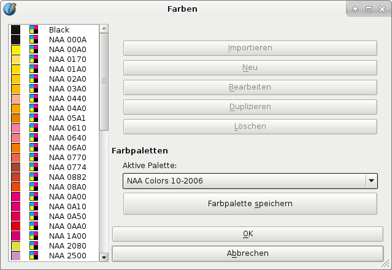

The Newspaper Association of America (NAA) is the trade association for newspapers in the United States and Canada. As a nonprofit organization representing nearly 2,000 newspapers and their multiplatform businesses, the association focuses on major issues that affect today’s newspaper industry.
If you are making color ads to be printed in a newspaper (or otherwise on newsprint) in North America you will likely want to use the NAA Colors palette. Using the 51 NAA CMYK colors within Scribus allows advertisers to create ads that have colors which are optimized to match the colors they will get when an ad is being printed in a typical newspaper printing workflow.
|  |
Color palettes are most useful when a printed color reference is available. In the case of NAA Colors this reference is called “Color Ink Book,” the current version of which is Vol. 10 (2006). It’s available for purchase through the NAA website.
For publishers and printers, having graphics based on NAA Colors makes it easier to meet the SNAP (Specification for Newsprint Advertising Production) requirements. With NAA Colors it’s possible to deliver high color quality, as well as meeting advertisers’ expectations. The SNAP website also provides ICC profiles recommended for best results in newspaper printing, including color correctness and optimal ink coverage.